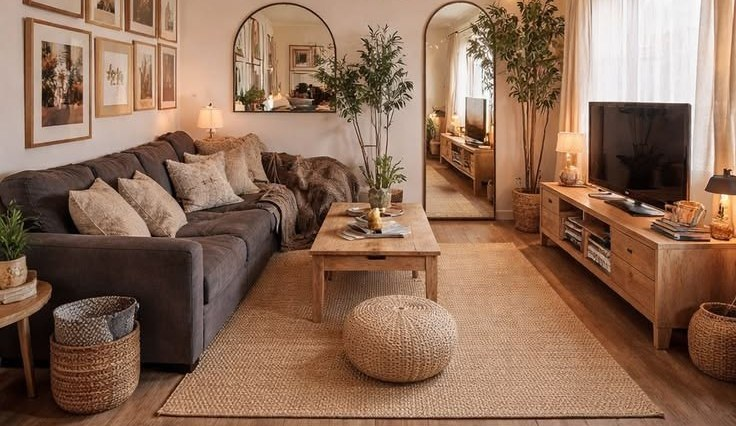
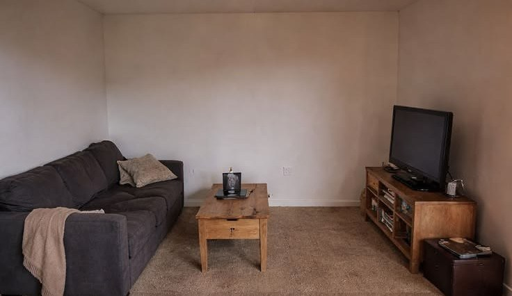
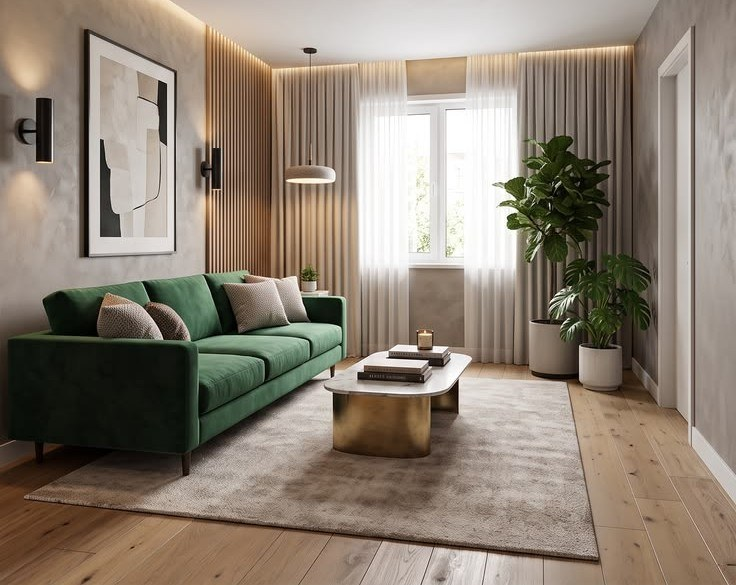

Комната та же.
Живётся иначе.
Design your live — дизайн интерьера квартир. Слева и справа одна и та же гостиная: до ремонта и после. Точка съёмки не менялась — потяните ползунок и сравните сами.


Комната, которой ещё нет
К каждому проекту прилагается 3D-макет. Планировку, свет и цвета видно до того, как куплены материалы — а не после.
Чертёж этой комнаты. Сейчас она соберётся в объём.
Потяните, чтобы осмотреться. Переключите палитру и вечерний свет.

по этому проекту
Гостиная с рейками, 24 м²Макет собран по этой комнате: тот же вид от двери к окну, те же рейки у стены, тот же диван. Палитра «Оригинал» — её цвета.
Смотреть пару кадровПримерьте цвет на свою стену
Загрузите фотографию комнаты и перекрасьте стены. Снимок обрабатывается прямо в браузере и никуда не отправляется.
Загрузите фото своей комнаты
Лучше всего подходят кадры с ровной стеной при дневном свете. Фото остаётся на вашем устройстве.Ещё три комнаты — тоже из одной точки
В каждом проекте лежит своя пара кадров: тот же ползунок, тот же способ проверить.